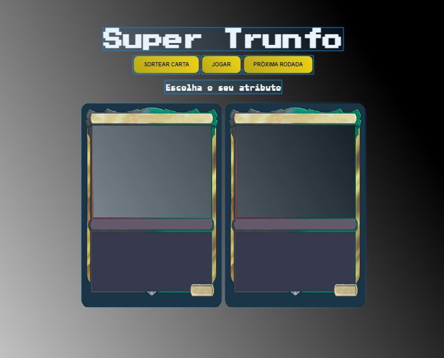

Apresentação
Rio Grande do Sul, Brasil
Desenvolvedor front-end com alguns projetos individuais
com objetivos acadêmicos, cursando ciência da computação
e aberto a oportunidades de vagas junior ou estágio. Aqui você encontra
alguns dos meus projetos desenvolvidos.
Experiência
Freelance Developer
Dev. front-end - 2022/04 até o momento.
Desenvolvendo projetos com objetivo de estudos, a fim
de colocar em prática conhecimentos adquiridos por meio dos cursos
e comunidades de desenvolvimento.
Projetos
-

SuperTrunfo
Projeto desenvolvido na imersão_dev, uma comunidade
de tecnologia onde adquiri e compartilhei conhecimentos com outros programadores(as). Desenvolvi novas funcionalidades no projeto utilizando lógica de programação com javascript. -
Página web
Página fícticia desenvolvida na formação de HTML e CSS, onde coloquei em prática o desenvolvimento de formuários, tabelas, posicionamento, lista de navegação, layout responsivo entre outros.